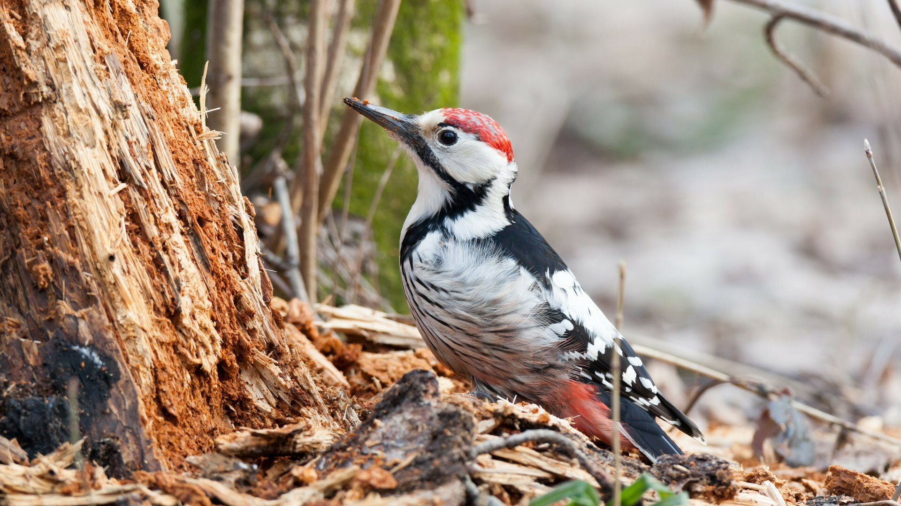

Madaraink
Széncinege
- Testhossza: 12,5-14 cm
- Testömege: 14-22 g
- Szárnyfesztávolsága: 22 cm
- Táplálkozása:
- rovarok
- pókok
- szöcskék
- poloskák
- hernyók
- Tojásai kikelési ideje: 12-15 nap
- Védettsége: védett

Fehérhátú fakopáncs
- Testhossza: 24–26
- Testömege: 100–112 g
- Szárnyfesztávolsága: 38–40
- Táplálkozása:
- rovarok
- hernyók
- hangyák
- magvak
- Tojásai kikelési ideje: 14-16 nap
- Védettsége: védett (FOKOZOTTAN)
Füsti fecske
- Testhossza: 17-19 cm
- Testömege: 16-22 g
- Szárnyfesztávolsága: 32-34,5 cm
- Táplálkozása:
- repűlő rovarok
- levéltetvek
- pókok
- hernyók
- Tojásai kikelési ideje:
- Védettsége: védett

Parlagi galamb
- Testhossza: 31–34 cm
- Testömege: 230–370 g
- Szárnyfesztávolsága: 63–76 cm
- Táplálkozása:
- gyommagvak
- haszonmagvak
- Tojásai kikelési ideje: 17 nap
- Védettsége: nem védett

Fekete rigó
- Testhossza: 23,5–29 cm
- Testömege: 80–125 g
- Szárnyfesztávolsága: 34–38 cm
- Táplálkozása:
- bogarak
- lárvák
- giliszták
- gyümölcsök
- Tojásai kikelési ideje: 14 nap
- Védettsége: védett
Dolmányos varjú
- Testhossza: 44–52 cm
- Testömege: 540–600 g
- Szárnyfesztávolsága: 84–100 cm
- Táplálkozása:
- rovarok
- kisebb emlősök
- kisebb madarak
- dögök
- növények
- Tojásai kikelési ideje: 17-20 nap
- Védettsége: nem védett

Fürj
- Testhossza: 16–18 cm
- Testömege: 75–135 g
- Szárnyfesztávolsága: 32–35 cm
- Táplálkozása:
- rovarok
- magvak
- bogyók
- Tojásai kikelési ideje: 16-17 nap
- Védettsége: védett